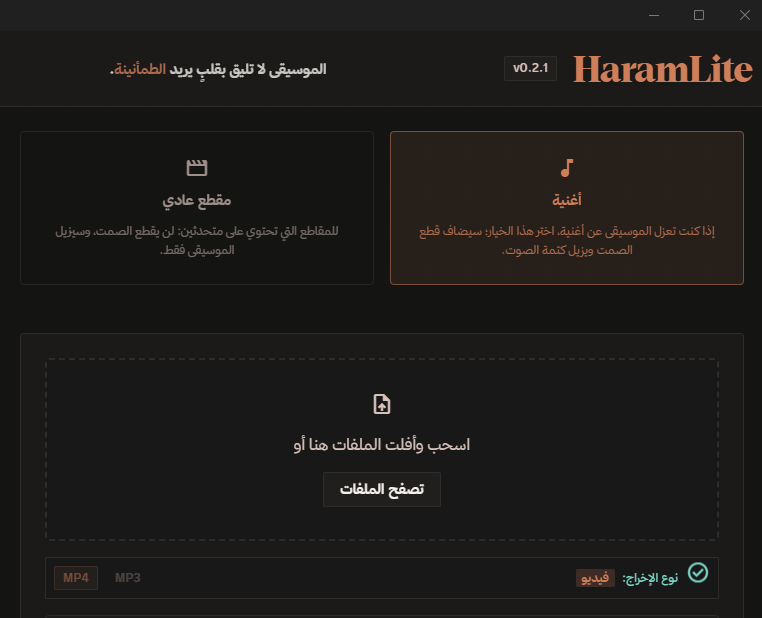

التحميل والتثبيت
| الملف | الوصف |
|---|---|
HaramLite_0.2.1_x64-setup.exe |
الموصى به — مثبّت NSIS يثبّت كل شيء تلقائياً: VC++ Redist، أدوات المعالجة (FFmpeg وyt-dlp)، ونموذج الفصل. |
HaramLite_0.2.1_x64_en-US.msi |
نسخة MSI للبيئات التي تُدار بالنطاق أو التثبيت الصامت. |
النسخة المحمولة: لم تُشحن في 0.2.1 — المثبّت هو الطريق المدعوم حالياً (المحمولة تحتاج مجلد bin وmodels بجانب التنفيذي، وحجمها ~515MB).
المتطلبات
- ويندوز 10/11 بمعمارية x64 — ولا شيء آخر، فالمثبّت يتولى الباقي.
- للسرعة: كرت NVIDIA (CUDA) أو أي كرت DX12 (DirectML) يُستخدَم تلقائياً عند تفعيله من الإعدادات.
الإصلاح الذاتي
إن حُذف مكوّن (النموذج أو أدوات المعالجة) يظهر معالج إصلاح ذاتي من الإعدادات يعيد تنزيله ويتحقق من بصمته (SHA-256) قبل التثبيت.
طريقة الاستخدام
- شغّل HaramLite (وستجد أيقونته في شريط المهام — وإغلاق النافذة يخفيه إلى الشريط ويُبقي العمل جارياً).
- أفلت ملفاً (فيديو أو صوت)، أو الصق رابطاً من يوتيوب وغيره، أو استخدم زر الإضافة في المتصفح.
- اختر الوضع: أغنية (فصل كامل + قصّ الصمت) أو مقطع عادي (إزالة الموسيقى فقط)، واختر الناتج MP3 أو MP4.
- اضغط «فصل» — والنتيجة تُحفظ بجانب الملف الأصلي، مع إشعار وسجل أحداث حي.
ماذا يفعل؟
وضعان للمعالجة
«أغنية»: فصل الموسيقى + مؤثرات إحياء + قصّ الصمت تلقائياً. «مقطع عادي»: إزالة الموسيقى مع إبقاء الكلام طبيعياً.
من رابط مباشرة
الصق رابط يوتيوب وغيره، والبرنامج ينزّل ويعالج تلقائياً — أو أرسل أي رابط بنقرة يمين من المتصفح.
دفعات ومجلد مراقبة
أفلت عدة ملفات وتُعالج بالترتيب مع إمكانية الإيقاف، أو فعّل مجلد مراقبة ليُعالج كل ما يُوضع فيه تلقائياً — مع حماية من امتلاء القرص.
مشاهدة مفلترة في المتصفح
زرّان داخل مشغّل يوتيوب: «حمّل وعالج»، و«شاهد مفلتراً» الذي يشغّل الصوت المعالَج متزامناً مع الفيديو ويتخطّى مقاطع الصمت.
بوت تيليجرام (اختياري)
أرسل رابطاً أو ملفاً من هاتفك، والبوت يسألك «أغنية أم مقطع عادي؟» ثم يعالج على جهازك ويعيد الناتج.
أيقونة الشريط والإشعارات
يعمل في الخلفية مع وصول دائم من أيقونة الشريط، وإشعارات انتهاء بصوت خفيف، وسجل أحداث حي.
الجديد في 0.2.1
بوت تيليجرام (اختياري)
- اقتران برمز: لا يستجيب البوت لأي حساب حتى تربط حسابك — الإعدادات تعرض رمزاً من 6 أرقام صالحاً 10 دقائق و5 محاولات ثم يُبطَل، ترسله للبوت فيُسجَّل معرّفك تلقائياً. وأي حساب آخر يُتجاهل تماماً.
- حدود تيليجرام معلنة: البوت يرسل حتى 50MB ولا يستطيع تنزيل أكثر من 20MB من ملف مُرسَل (الروابط بلا حد). لذلك يُعاد ترميز الفيديو الكبير ليدخل في الحدّ، وإن كان الضغط سيشوّه الصورة يُرسَل الصوت بجودة كاملة مع بيان السبب.
- خادم Bot API محلي (إعداد متقدم): يرفع السقف إلى 2GB وبالجودة الأصلية ونقل فوري من القرص.
- خيار «إرسال الصوت فقط (MP3) دائماً» لتوفير وقت رندرة الفيديو.
أيقونة الشريط
البرنامج يعمل في الخلفية (بوت/مراقبة/تكامل المتصفح) وزر الإغلاق يُخفي إلى الشريط بدل إنهاء العملية — والإغلاق الكامل من قائمة الأيقونة، والنقر عليها يعيد النافذة. (قبل هذا كان يمكن أن يبقى يعمل بلا أي وسيلة للوصول إليه.)
تكامل المتصفح اكتمل
المشاهدة المفلترة تتخطّى مقاطع الصمت التي يخلّفها كتم الموسيقى (قفز فوري فوقها)، مع خيار في قائمة الزر الأيمن يوقف التخطي، ونتائج التنزيل تُحفظ في مجلد نتائجك.
أمان الإعدادات
- توكن البوت و
api_hashمشفّران بـ DPAPI (مرتبطان بحسابك وجهازك) — لا نصّ صريح على القرص، ولا نسخة في متصفح الواجهة. - مجلد بيانات البرنامج انتقل إلى
%LOCALAPPDATA%— فلا يسافر مع ملف التعريف المتجول ولا يدخل النسخ السحابي. - تنقيح التوكن من كل رسالة خطأ، فلا يظهر في السجل ولا في محادثة تيليجرام.
إصلاحات
- حذف المصادر المؤقتة بعد المعالجة، وتنظيف مجلد تيليجرام المؤقت تلقائياً (كان يتراكم إلى مئات الميغابايت).
- إزالة تحذير مكرر في السجل عند كل وظيفة مشاهدة، وحذف مخلفات القتل عند الإقلاع.
الخصوصية
المشروع مبني على قاعدة واحدة: ملفاتك لا تغادر جهازك.
تطبيق ويندوز
- الفحص، الفصل بالذكاء الاصطناعي، المؤثرات، والترميز — كلها محلياً. لا رفع لأي ملف، ولا حسابات، ولا تحليلات، ولا تتبّع.
- الاتصال بالإنترنت اختياري: يُستخدم فقط لتنزيل رابط طلبتَه، وتحديث yt-dlp، وفحص التحديثات، وبوت تيليجرام إن فعّلته. ومن لا يستخدم هذه الميزات يمكنه قطع الشبكة والتطبيق يعمل.
- الأسرار مشفّرة: توكن البوت و
api_hashمحفوظان بـ DPAPI المرتبط بحسابك وجهازك، ولا يعملان إن نُسخ الملف إلى جهاز آخر. - البوت لا يعمل بلا توكن تضعه أنت ولا بلا اقتران حسابك — ولا يستجيب لأي حساب آخر إطلاقاً.
إضافة المتصفح
- لا تُجري أي طلب شبكة: ما تقرأه (رابط التبويب عند نقرك) يذهب إلى تطبيقك المحلي عبر Native Messaging — لا إلى المطوّر ولا إلى أي خادم.
- الصلاحيات عند الحد الأدنى: قائمة الزر الأيمن، والتبويب النشط عند نقرك، والتخاطب مع التطبيق. لا سجل تصفح، ولا وصول إلى مواقع أخرى.
- السياسة الكاملة: سياسة الخصوصية.
للمطورين
المشروع مفتوح المصدر، والبناء من المصدر موثّق في CONTRIBUTING.
التقنيات: Tauri v2 · Rust · ONNX Runtime (UVR-MDX-NET-Voc_FT) · FFmpeg · yt-dlp · TypeScript/Vite · Tailwind CSS · خط ثمانية (Thmanyah)
مشاكل أو اقتراحات؟
افتح تذكرة على GitHub Issues، أو من داخل التطبيق: الإعدادات ← الإبلاغ عن مشكلة (يُرفق سجل الأحداث تلقائياً).